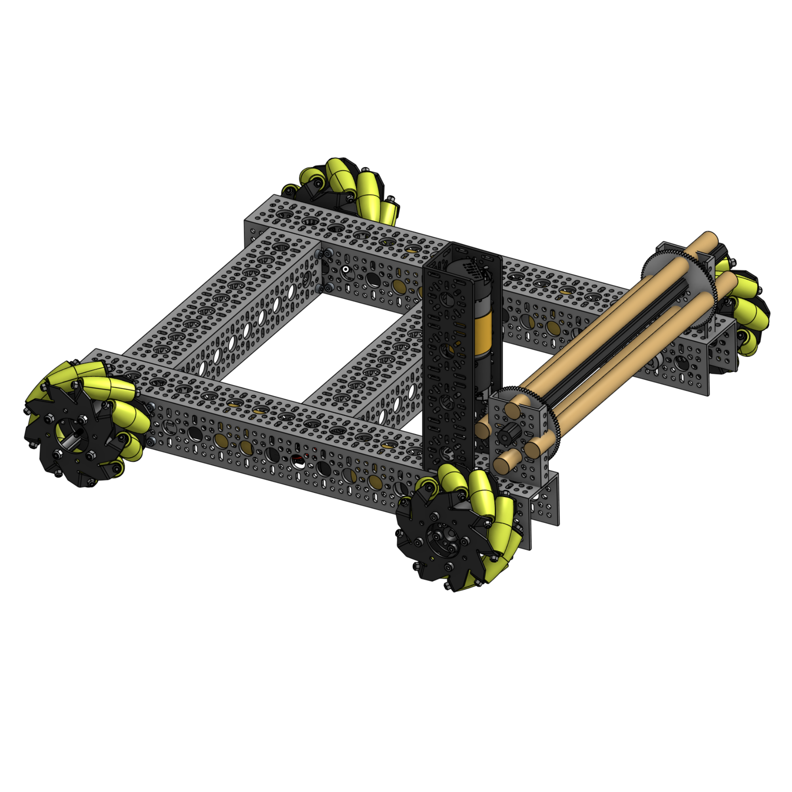

Our Robot

Our robot is built from goBILDA parts and based on the goBILDA Starter Bot. Its intake pulls in the balls and passes them to the outtake, which shoots them into the hive to score points. The frame is metal, and powerful motors drive our attachments, including the intake and the wheels. Gears and a chain connect the motors to the wheels. The robot has 6 wheels and uses rollers for the intake, and everything is held together with screws. Overall, this robot uses our engineering and coding skills and a simple design to win the robot game.